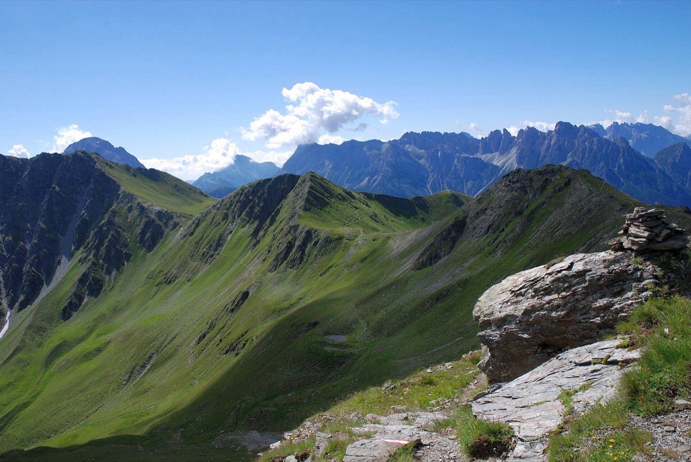

Miles-from-the-car problems
- Talus, ankle, pop. She can’t bear weight, the group has one phone at 8%, and the daylight is doing daylight things. What happens next is a decision tree, not a vibe.
- Lunch, bee, hives. Two minutes in it’s itching. Five minutes in there’s a wheeze. The epinephrine is in somebody’s pack — whose?
- The hot climb. Your partner stops making sense on the exposed switchbacks at noon. Cool first, right there, with what you carry — not at the car.
Read these five first
This order pays off soonest once the trailhead is behind you:
- Musculoskeletal Injuries — ankles and wrists are the thru-hiker tax
- Anaphylaxis — epi first, early, no substitutes
- Heat Illness — the spectrum, and where your partner sits on it
- Evacuation — notes, messengers, and who stays
- Kits & Preparation — the kit that earns its weight
Then pressure-test it
Interactive scenarios — one decision at a time, tempting mistakes included, debrief at the end:
- Two Go, One Stays — the send-for-help note, under pressure
- Find the Epi — anaphylaxis with the clock running
- Cool First — heat stroke on the ridge
The certification question, honestly. “Wilderness First Aid” isn’t a regulated credential. No government body defines what a WFA card means — it means whatever the company that printed it says it means. What counts in front of a patient is whether you can do the work. This course teaches the work, free, and issues a record of completion — not a certificate, and we won’t pretend otherwise. If a trail organization or guide program requires a provider’s card, take their class — you’ll arrive ahead. If nobody requires you to hold a card, what you need are the skills, not the laminate.
Asked around the bear hang
What do you do for a bad ankle six miles in?
Run the blunt field test: can she take four steps on it, and is the bone itself (the ankle knobs, the midfoot) free of point tenderness? Fail either check and you treat it as broken: splint it and start the evacuation decision early, while there’s daylight left to spend. Pass both and it can usually walk itself out, supported and watched.
How much first aid kit is enough for a weekend?
Enough to stop a real bleed, splint a limb, and handle the small stuff that actually ruins trips — blisters, burns, splinters. That fits in a sandwich bag. The checklist covers it; the skills to use it weigh nothing and matter more.
Is it safe to hike alone after learning this?
Solo travel trades away your rescuer, and no course changes that. What changes the odds: a written plan left with someone who’ll act on it, a hard turnaround time, and knowing which injuries walk out and which don’t. Kits & Preparation covers the plan you leave behind.
What this is
Fifteen lessons, a 40-question knowledge check, sixteen practice scenarios, a printable field reference card, and a kit checklist. Free, no account, nothing recorded about you, source on GitHub. It teaches decision-making, not hands-on skill — practice the hands-on parts on a real, padded, complaining friend.
Same trails, different speeds: mountain bikers · trail runners · thru-hikers & long-distance trekkers